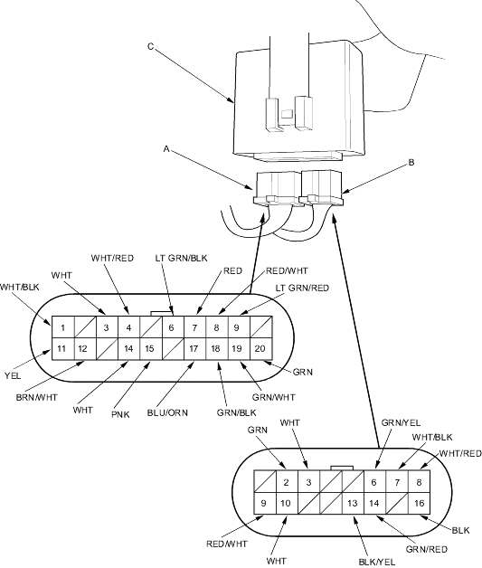

Security System
Security Control Unit Input Test (cont'd)
22-259
5-door:
Remove the dashboard lower cover (see page
20-217
).
Disconnect the 20P connector (A) and 16P connector (B) from the control unit (C).
Inspect the all connector and socket terminals to be sure they are all making good contact.
If the terminals are bent, louse or corroded, repair them as necessary and recheck the system.
If the terminals look OK, go to step 4.

Wire side of female terminals